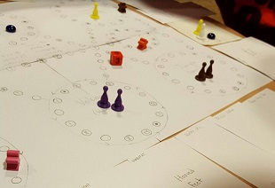
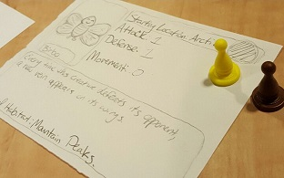

School Project:
Feed the Masses

Feed The Masses
This project was created by Josh McMahan, Alia Gestl, and Me for our 10 week project in 'Game Dev & Algo Prob Solve II' class. It is a tower defence game that I was lead programmer for.
The project was our first major group that we had to do for class. It tought about working as a group and how to keep code in order while multiple people are writing it. It also made each member problem solve so that we could reach each milestone. Finally it also tought us how to manage time in a big project over many weeks so that we can meet deadlines.
In the realm of programming, I gained several skills from the project. One skill I learned was how to use trigonometry, pi, and other things related to those things in code and make them work. Anothering I learned was how to fix bugs in a reasonable amount of time. Something that I learned was that "code is dumb", this means that code can be very annoying and bad, but it can also be very useful if implemented correctly.


School Projects:
Unnatural Selection
Unnatural Selection
It the survival of the weirdest. This project was created by 5 other people and me in our 'Game Design & Developement I' class. It is a board based around the idea of evolution, adaptations, and mutations.
This game is a three to eight player evolution-themed board game that focuses on using creature abilities, movement, attacking, and defending in order to get certain cards that trigger events, cause mutations in the player's creature, or give the player special adaptability in certain habitats on the board. The adaptability gives the players the chance to obtain habitat tokens; once a player gets four zone tokens and reach the end zone they win the game.
The three initial ideas were a game based solely on random environment changes and the ability to adapt to them, a game that was based on achieving adaptability to different zones on one mainland, where each subsequent zone was more difficult to adapt to, and our current game. We picked our current idea because it allowed for more player interaction than the other two and was easier to add certain aspects of the other two ideas without totally changing the game.